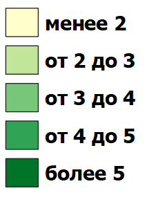

Продуктивность культур на государственных сортоучастках Пермского края
Панель слоев
Пермский край
Расположение сортоучастков
озимая рожь
сорт "Вятка 2"
сорт "Кировская 89"
сорт "Фаленская 4"
яровая пшеница
сорт "Иргина"
сорт "Горноуральская"
сорт "Красноуфимская 100"
Базовые карты:
Картографическая основа
(ESRI Gray)
Космоснимок
Легенда
урожайность в т/га

годы